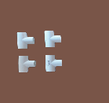
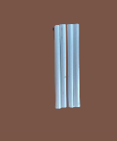
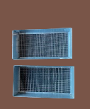
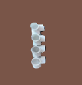
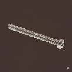
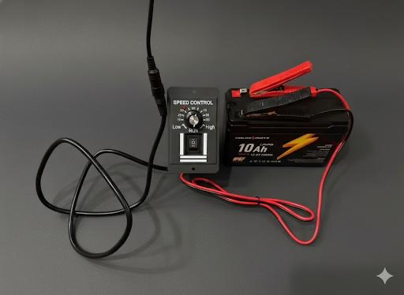
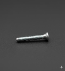
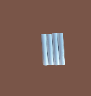
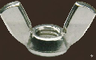

Bill of Materials
- Four 3-way connectors
- Four 3-way elbow connectors
- Four 4-way elbow connectors — a.co/d/6Ayg6ke
- ¾ inch diameter PVC pipes
- Six 11 ¾ inch pipes
- Four 17 inch pipes
- Eight 7 ½ inch pipes
- Six ¼ inch × 2 inch machine screws
- Four ¼ inch × 1 inch machine screws
- Eight ¼ inch wingnuts
- Sifter trays — Wenses Soil Sifter, Wide Size — amazon.com/dp/B0FCF7VVDN
- 17.5 × 11.5 inch (¼ in mesh)
- 17.5 × 11.5 inch (⅛ in mesh)
- 12 volt 10 Ah battery — amazon.com/dp/B0DJ2J6R25
- 10 W / 12 volt solar panel — amazon.com/dp/B09574FVY6
- 12 volt vibration motor, 3800 RPM — amazon.com/dp/B0DDT3SSGK
- DC 12 V–60 V / 20 A motor speed controller — amazon.com/dp/B07TSJ3XPQ
- ¼ inch wooden board
| Label | Part | Photo | Label | Part | Photo |
|---|---|---|---|---|---|
| A | 3-way connector |  | F | 17 inch PVC pipes |  |
| B | 4-way elbow connector | G | Sifting trays |  | |
| C | 3-way elbow connector |  | H | ¼ in × 2 in machine screw |  |
| D | 11 inch PVC pipes |  | I | ¼ in × 1 in machine screw |  |
| E | 7.5 inch PVC pipes |  | J | ¼ in wingnut |  |
Building the Top Frame
Attach two 11 inch PVC pipes (D) and two 17 inch PVC pipes (F) using four 3-way elbow connectors (C). Lightly tap the connectors with a hammer to tighten the frame.
Building the Middle Frame
Attach two 11 inch PVC pipes (D) and two 17 inch PVC pipes (F) using four 4-way elbow connectors (B). Lightly tap the connectors with a hammer to tighten the frame.
Connecting the Frames
Connect the top frame and the middle frame using four 7.5 inch PVC pipes (E). Lightly tap the connectors with a hammer to tighten the frame.
Attaching the Legs
Attach four more 7.5 inch PVC pipes (E) to the other side of the 4-way elbow connectors (B).
Building the Leg Bases
Build two leg bases by attaching two 3-way connectors (A) to 11 inch pipes (D).
Attaching the Leg Bases
Attach the leg bases to the legs of the sifter.

Cutting the Wood
Cut the wooden plank to 9 × 12 inch size.
Attaching the Trays to the Frame
Insert the tray with ⅜ in mesh on top, and the tray with ¼ in mesh on the bottom. Mark the middle of the 11 inch PVC pipe (D) and tray. Drill one hole in each pipe through the tray using a ¼ inch drill bit.
Attaching the Motor
Place the motor in the center of the board and mark the four attachment points. Drill holes at each point using a ¼ inch drill bit. Attach the motor to the board with the 1 inch screws (I) and wingnuts (J).
Attaching the Board to the Sifter
Using 2 inch screws (H), attach the board to the PVC pipes and frames. Tighten with wingnuts.
Wiring the Speed Regulator
Attach the wires coming from the battery to the speed regulator's power terminal. Then attach the motor wires to the motor terminal on the regulator.
Connecting the Battery
Connect the battery to the regulator on the input side. Ensure the positive (red wire) and negative (black wire) are connected correctly. Similarly connect the regulator output to the motor.